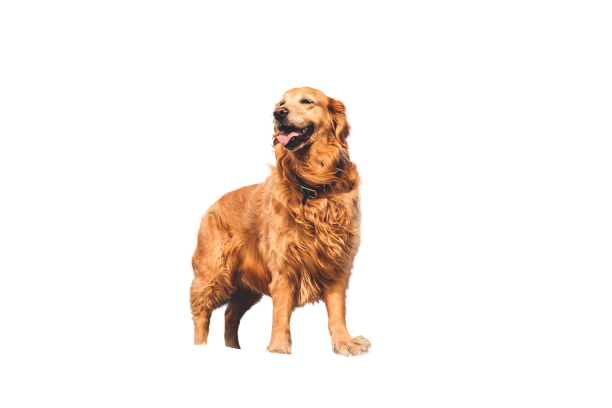

BACK

GOLDEN RETRIEVER
The Golden Retriever, an exuberant Scottish gundog of great beauty, stands among America's most popular dog breeds. They are serious workers at hunting and field work, as guides for the blind, and in search-and-rescue, enjoy obedience and other competitive events, and have an endearing love of life when not at work. The Golden Retriever is a sturdy, muscular dog of medium size, famous for the dense, lustrous coat of gold that gives the breed its name. The broad head, with its friendly and intelligent eyes, short ears, and straight muzzle, is a breed hallmark. In motion, Goldens move with a smooth, powerful gait, and the feathery tail is carried, as breed fanciers say, with a 'merry action.' The most complete records of the development of the Golden Retriever are included in the record books that were kept from 1835 until about 1890 by the gamekeepers at the Guisachan (pronounced Gooeesicun) estate of Lord Tweedmouth at Inverness-Shire, Scotland.